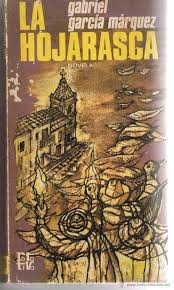
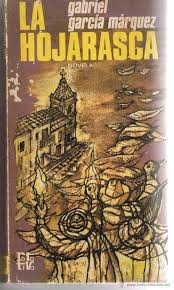

En un mundo cada vez más acelerado y lleno de distracciones, la lectura sigue siendo un faro de conocimiento y enriquecimiento personal. Los libros no solo nos transportan a mundos imaginarios o nos enseñan sobre eventos históricos, sino que también nos desafían a reflexionar sobre nosotros mismos y el mundo que nos rodea. Esta página no es solo una lista de libros leídos; es un testimonio de un viaje de descubrimiento y crecimiento continuo. Cada libro es una puerta que se abre a nuevas perspectivas, ideas y emociones. Esta recopilación no solo refleja lo que he leído hasta ahora, sino que también representa un compromiso constante con la exploración intelectual y el aprendizaje continuo. La página se irá actualizando conforme descubra nuevas obras y experimente nuevas narrativas, asegurando así que esta colección siga siendo un reflejo fiel de mi viaje literario en constante evolución.
Mi Top 3 de lo que va del año
The fox hole court

Neil Josten es la última incorporación al equipo de Exy de la Universidad Estatal de Palmetto. Es bajo, rápido, tiene un gran potencial y es el hijo fugitivo del asesino conocido como El Carnicero. Firmar un contrato con los PSU Foxes es lo último que debería hacer un tipo como Neil.
El prisionero de Azkaban

un peligroso asesino, Sirius Black, se escapó de Azkaban, la prisión de los magos, y al parecer está dispuesto a encontrar y matar a Harry. Se sabe también que es la primera persona en escapar de la prisión de magos y nadie sabe cómo lo hizo.
Alas de sangre

Violet Sorrengail creía que se uniría al Cuadrante de los Escribas para vivir una vida tranquila, sin embargo, por órdenes de su madre, debe unirse a los miles de candidatos que, en el Colegio de Guerra de Basgiath, luchan por formar parte de la élite de Navarre: el Cuadrante de los Jinetes de dragones.
Libros Leídos en el Año
- Percy Jackson y la maldición del Titan
- Percy Jackson y la batalla del laberinto
- Percy Jackson y el último heroe
- La canción del lono
- La canción del cuervo
- La canción del corazon
- La canción de los hermanos
- Un corazón obstinado
- El fabricante de lágrimas
- La piedra filosofal
- La cámara secreta
- El pricionero de Azkaban
- El caliz de fuego
- La orden del fenix
- El misterio del principe
- Las reliquias de la muerte
- El principe cautivo
- The fox hole court
- The raven King
- The kings men
- Alas de sangre
- El principe cruel
- El rey malvado
- La reina de nada
- El rey de Elfhame
 
